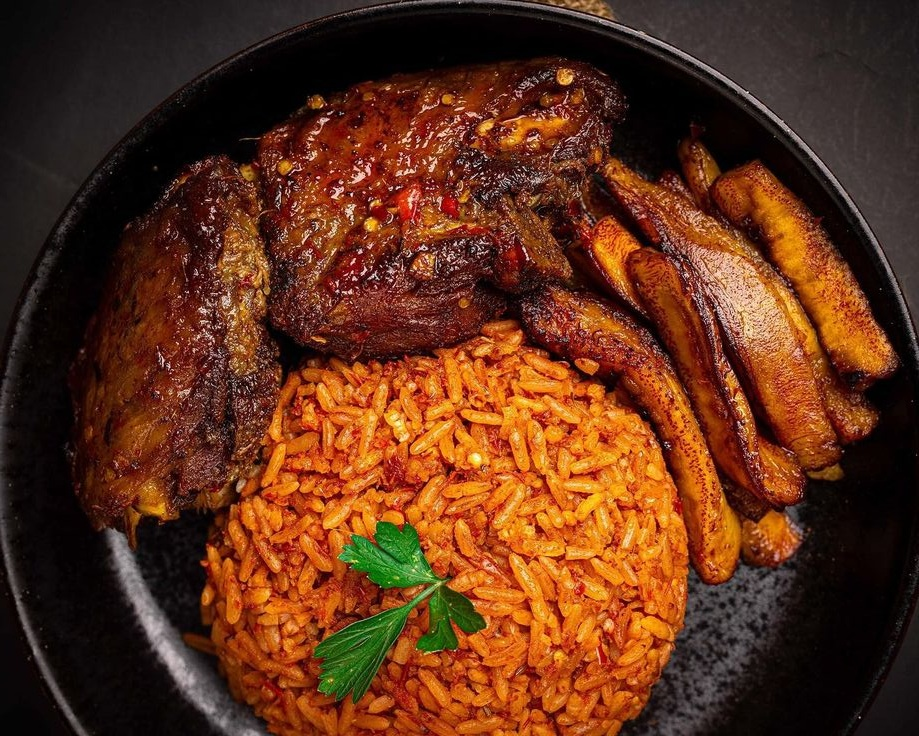

| Nutrient | Source | Benefits |
|---|---|---|
| Carbohydrates | Rice | Supplies essential fatty acids, aids absorption of fat-soluble vitamins |
| Protein | Vegetable or palm oil | Supports muscle repair, growth, and immune function |
| Fat | Rice | Provides energy, supports brain function, fuels physical performance |
| Fiber | Rice, optional vegetables (carrots, peas) | Promotes digestive health, regulates blood sugar, supports satiety |
| Vitamin A | Tomatoes, red bell peppers, palm oil | Supports vision, immune health, skin integrity |
| Vitamin C | Tomatoes, bell peppers, scotch bonnet peppers | Boosts immunity, aids collagen formation, acts as an antioxidant |
| Iron | Rice, optional meat | Supports oxygen transport, prevents anemia, aids energy production |
| Potassium | RTomatoes, onions, optional vegetables | Regulates blood pressure, supports muscle function, maintains fluid balance |
| Magnesium | Rice, vegetables | Supports muscle and nerve function, bone health, energy metabolism |
| Antioxidants | Tomatoes, red bell peppers | Reduces inflammation, protects against cell damage, lowers chronic disease risk |
